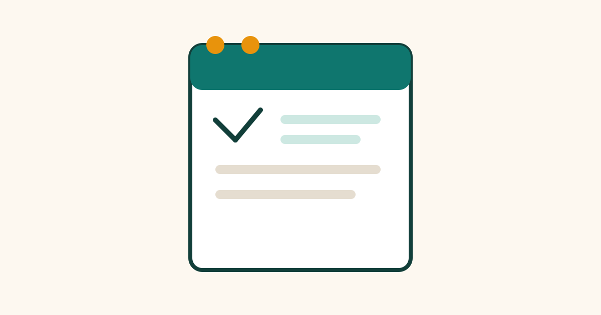

How to Plan Your Day the Night Before

Mornings often feel rushed because the day begins with too many decisions. What should I do first? What did I forget yesterday? Where are my keys, my bag, or my notes? Planning your day the night before removes many of those decisions. You go to sleep knowing what tomorrow holds, and you wake up with a clear first step. This guide shows a simple evening routine that takes about ten minutes.
Review Today Before You Plan Tomorrow
Start by looking back at today for two minutes. What did you finish? What is still unfinished? What new task appeared during the day? This short review stops unfinished work from being forgotten and helps you carry the right tasks forward. Write unfinished tasks on tomorrow's list only if they still matter; some tasks can be dropped or postponed without harm.
Reviewing today also helps you learn about your own pace. If you often plan ten tasks and finish four, your plan is probably too full. A realistic plan is more useful than an ambitious one that leaves you feeling behind every night. Notice patterns over a week, and adjust the size of your daily plan to match what you can actually complete.
Choose Three Main Priorities
Next, choose three main priorities for tomorrow. These are the tasks that would make the day feel successful even if little else gets done. They might include an important work task, a study session, a phone call, or a household job. Write them clearly, with enough detail to start without thinking, for example: “Send the report draft to the team by noon,” rather than just “report.”
After your three priorities, add a small list of secondary tasks, such as replying to a message, buying milk, or tidying a room. Keep this list short. The purpose is not to fill every minute, but to give the day structure. If you finish your priorities early, you can move to secondary tasks. If the day becomes busy, you still know what matters most.
Put Tasks in Order and Set Times
A list without order can still cause delay, because you must decide what to do first. Put your tasks in a sensible order. Start with the task that needs the most focus, if your morning allows it, or place fixed appointments first and fit other tasks around them. A rough time for each priority is enough; you do not need a minute-by-minute schedule.
Also note any fixed events, such as meetings, classes, travel, or deadlines. When you see these on the plan, you can avoid booking two things at the same time and you can prepare earlier. If a task depends on someone else, note that too, so you are not waiting for information you could have requested the night before.
Prepare What You Will Need
Preparation is the part of evening planning that saves the most morning time. Lay out clothes, pack your bag, charge your devices, and place keys, wallet, and any documents in one spot. If you need to cook, prepare ingredients or set out what you will use. If you need to study or work, place your books or files where you will find them.
This step also reduces morning stress. When everything is ready, you do not waste energy searching for items or making last-minute decisions. Keep preparation simple and repeatable. A small, fixed place for daily items works better than a new system each night, because it becomes a habit you can follow even when you are tired.
Common Mistakes
One common mistake is planning too many tasks and treating the plan as a test. A day plan is a guide, not a measure of your worth. If an urgent task appears, it is normal to adjust the plan. Another mistake is writing vague tasks such as “work on project” or “study.” Vague tasks are hard to start, so add a clear first action, such as “open the document and write the introduction.”
Many people also plan only in their heads. Mental plans are easy to forget, especially in the morning. Writing the plan down, even on paper, makes it real and easier to follow. Finally, avoid planning late at night when you are already exhausted. Choose a calm moment in the evening, perhaps after dinner, when you can think clearly for ten minutes.
Frequently Asked Questions
How long should evening planning take?
About ten minutes is enough for most people. Two minutes to review today, a few minutes to choose priorities and order, and a few minutes to prepare items. If planning takes much longer, the system is probably too detailed and should be simplified.
What if my plan changes during the day?
Change it without guilt. Move unfinished priorities to the next day, drop tasks that are no longer needed, and add urgent tasks at the top. A good plan helps you adapt; it does not force you to follow an outdated list.
Should I use paper or a phone app?
Use whichever you will actually check in the morning. Paper works well because it is visible and simple. An app works well if you already use your phone for reminders. The tool matters less than the habit of writing and reviewing the plan daily.
What should I do first in the morning?
Start with your most important priority, or with a short, clear task that builds momentum. Avoid starting with messages and news, which can fill the morning before important work begins. A clear first task makes the rest of the day easier.
Conclusion
Planning your day the night before is a small habit with a large effect. Review today, choose three priorities, put them in order, and prepare what you need. Tomorrow will still bring surprises, but you will face them with a clear plan instead of a rushed morning. Try the routine for a week, keep it simple, and adjust it until it fits your life.